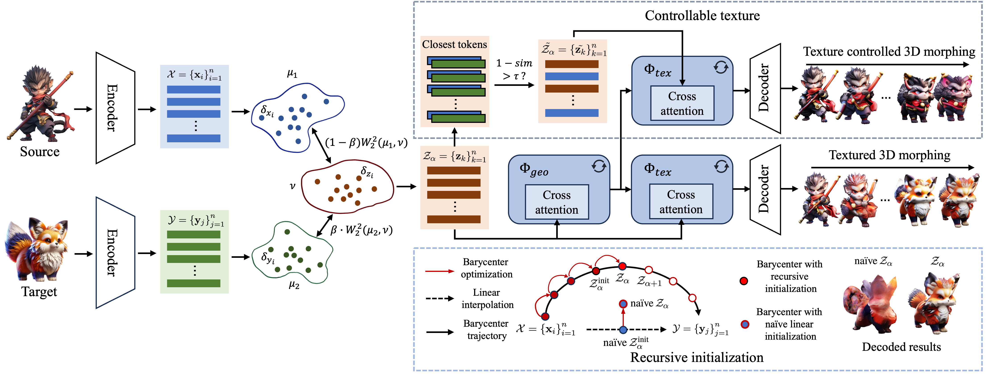

Textured 3D Morphing by Flow Model

Figure 1. High-fidelity textured 3D morphing of Wukong. Taking an image of Wukong (bottom left) as the source and an image of another character (bottom right) as the target, we demonstrate two types of textured 3D morphing by our method: (i) Purple arrows indicate texture-controlled morphing, where the geometric structure changes while preserving detailed textures from the source; (ii) Green arrows indicate textured 3D morphing guided by the target prompt.
Abstract
We present WUKONG, a novel training-free framework for high-fidelity textured 3D morphing that takes a pair of source and target prompts (image or text) as input. Unlike conventional methods—which rely on manual correspondence matching and deformation trajectory estimation (limiting generalization and requiring costly preprocessing)—WUKONG leverages the generative prior of flow-based transformers to produce high-fidelity 3D transitions with rich texture details. To ensure smooth shape transitions, we exploit the inherent continuity of flow-based generative processes and formulate morphing as an optimal transport barycenter problem. We further introduce a sequential initialization strategy to prevent abrupt geometric distortions and preserve identity coherence. For faithful texture preservation, we propose a similarity-guided semantic consistency mechanism that selectively retains high-frequency details and enables precise control over blending dynamics. This avoids common artifacts like oversmoothing while maintaining semantic fidelity. Extensive quantitative and qualitative evaluations demonstrate that WUKONG significantly outperforms state-of-the-art methods, achieving superior results across diverse geometry and texture variations.
Method Framework
Figure 2. Architecture. . Given a source and a target (image or text), we extract features using pretrained encoders and treat the condition tokens as empirical distributions. We compute their Wasserstein barycenter to obtain interpolated condition tokens. These are fed into a shared geometry flow model and texture flow model to generate 3D outputs at different α values, producing textured 3D morphs. The top-right shows our texture-controlled morphing branch, and the bottom-right illustrates the recursive initialization strategy.
Interactive Results
Below are interactive 3D visualizations. Click and drag to rotate the models. Scroll to zoom.
Source
Target
Case 1. Morphing from a magic book to a castle The top row preserves the book's material, while the bottom row transitions to the castle's scales.